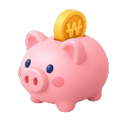
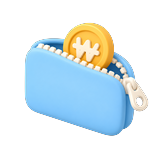
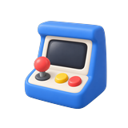
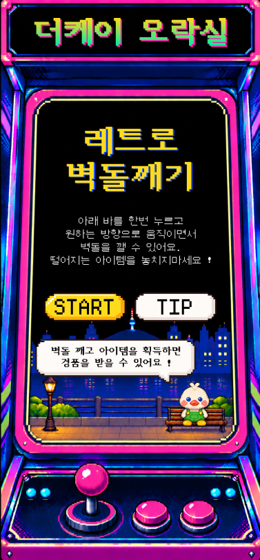

The-K 더 캐보자

장기저축급여
EP.01 장기저축급여
EP.01 장기저축급여
#장기저축급여
#월급관리
#평생월급
#복리마법
분할급여금
EP.02 분할급여금
EP.02 분할급여금
#퇴직후생활비
#퇴직급여금수령방법
#장기저축급여_퇴직급여금
#일시금vs분할

증좌
EP.03 증좌
EP.03 증좌
#장기저축급여
#급여율5.0%
#급여율인상
#증좌신청
복지혜택
EP.04 복지혜택
EP.04 복지혜택
#복지혜택
#이벤트혜택
#회원복지
#복지알림
혜택마트
EP.05 혜택마트
EP.05 혜택마트
#미래자산
#자산포트폴리오
#맞춤형금융설계
#스마트재테크

벽돌깨기
EP.06 벽돌깨기
EP.06 벽돌깨기
#벽돌깨기
#게임참여
#경품받기
#더케이오락실
증좌 2편
EP.07 증좌 2편
EP.07 증좌 2편
#급여공제저축
#선저축후지출
#쉬운목돈만들기
#부담없는소액저축
분할급여금 2편
EP.08 분할급여금 2편
EP.08 분할급여금 2편
#연말정산대비
#스마트한절세
#퇴직급여금조회
#내년재무목표
#복지혜택
#이벤트혜택
#회원복지
#복지알림
영상 보러가기
